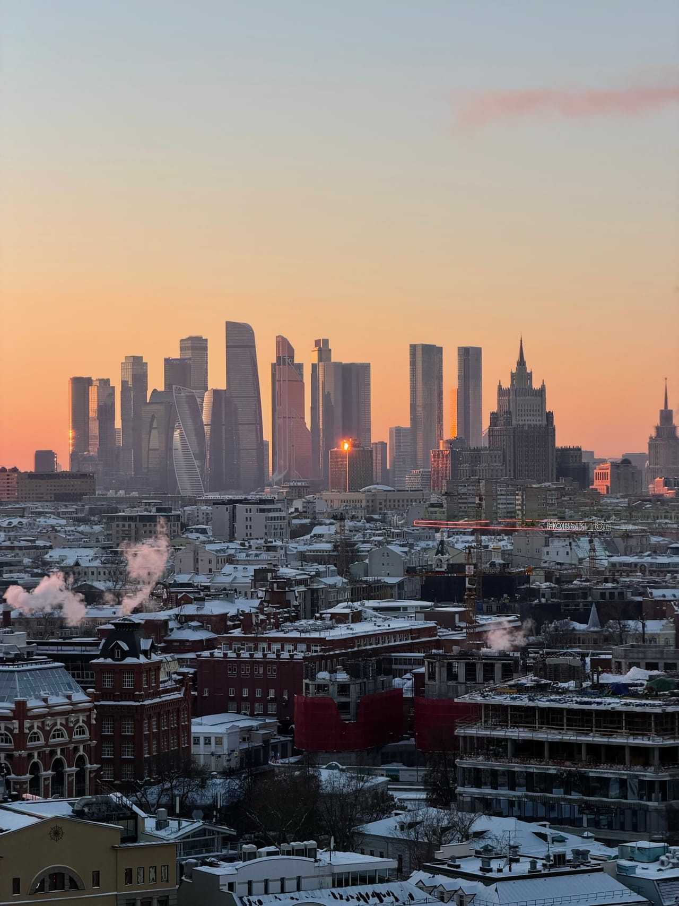

Статьи
Идеи для фотосессии на крыше Москвы: позы, образы и свет
Разбираем, что делать в кадре, что надеть и когда приходить: позы для соло и пары, образы под городской фон и работа с закатным светом.
Чем крыша лучше студии
На крыше не нужно строить декорации: город сам работает фоном, свет меняется каждые десять минут, а кадры получаются объёмными — с воздухом, глубиной и настоящей Москвой позади вас. Ниже — проверенные идеи для фотосессии на крыше: что делать перед камерой, что надеть и в какое время подниматься, чтобы свет сделал половину работы за вас.
Позы для фото на крыше: соло и в паре
Главное правило — не позировать «в лоб». Панорама за спиной сильна сама по себе, поэтому выигрывают естественные, чуть отстранённые позы: будто вы живёте на этой крыше, а не пришли фотографироваться.
Соло
- Взгляд в город. Встаньте вполоборота к панораме и смотрите не в камеру, а на горизонт — кадр превращается из портрета «на фоне» в историю.
- Силуэт на закате. Попросите снимать против света: тёмная фигура на оранжевом небе читается лучше любых деталей и прощает скованность.
- Движение. Несколько медленных шагов по площадке дают живую серию без застывших рук — обычно именно из неё выбирают лучший кадр.
- Крупный план с огнями в расфокусе. После заката город за спиной превращается в мягкое боке — достаточно отойти от фона подальше.
- Низкая точка. Камера чуть ниже уровня глаз — в кадре больше неба, фигура выглядит легче и выше.
В паре
- Смотрите в одну сторону. Обнявшись, лицом к панораме и спиной к камере — классика, которая не надоедает.
- «Случайный» разговор. Разговаривайте и смейтесь по-настоящему: репортажные кадры почти всегда сильнее постановочных.
- Медленный танец без музыки. Один поворот в паре — и у фотографа десяток разных кадров за минуту.
- Силуэты в профиль. На закатном небе касание лбами или поцелуй читаются даже в полной тени.
- Разные взгляды. Один смотрит в камеру, второй — на город: простой приём, который делает кадр многослойным.
Образы для фотосессии на крыше
Городской фон прощает почти любую одежду, но несколько правил экономят время на месте:
- Однотонное лучше пёстрого. Панорама и так насыщена деталями — мелкий принт будет с ней спорить.
- Подвижная ткань. Длинное пальто, платье или лёгкий плащ красиво работают с ветром, а он на высоте есть почти всегда.
- Контраст с фоном. Светлый образ выигрывает на вечернем небе, тёмный — днём.
- Удобная нескользящая обувь — обязательно. Если каблуки очень нужны для пары кадров, возьмите их с собой и переобуйтесь уже на площадке.
- Тёплый слой. Вечером на высоте прохладнее, чем на улице; куртку легко снять на время кадра.
Реквизита почти не нужно: город выразительнее любых аксессуаров. Если хочется детали — хватит одной: букет, шляпа или плёночная камера в руках.
Свет: закат и золотой час
Самое благодарное время — последний час перед закатом и полчаса после него. Сначала тёплый свет золотого часа ложится на лица без жёстких теней, затем небо уходит в розовый и оранжевый, а в городе включается подсветка — по сути, вы получаете три разные локации за одну прогулку. Подробнее о вечернем свете — в статье о закатах на крышах Москвы.
Днём снимать тоже можно: лёгкая облачность работает как огромный софтбокс. Сложнее всего ясный полдень — жёсткие тени и прищуренные глаза, так что солнечным днём лучше планировать съёмку на утро или ближе к вечеру.
Фоны: что реально видно с крыш каталога
Все примеры ниже — с наших площадок: в каталоге 10 крыш у метро Фили, Киевская, Курская, Марксистская, Новокузнецкая, Римская, Таганская и Шелепиха.
- Открыточная Москва. С крыши на Таганской видны Кремль, собор Василия Блаженного, высотка на Котельнической и Москва-река, а Сити собирается на горизонте.
- Закатный силуэт сталинской высотки. Крыша у метро Марксистская смотрит на Котельническую высотку с удачного для вечерней съёмки ракурса.
- Две эпохи в одном кадре. С крыши на Римской сталинская высотка и башни Москва-Сити попадают в один кадр.
- Сити крупным планом. Крыши в Филях выходят на башни делового центра, а с 60-этажной площадки город виден сверху.
- Гостиница «Украина». Скатная крыша у Киевской — графичный фон со сталинской высоткой.
Адреса площадок мы не публикуем: точное место встречи сообщаем после подтверждения записи, а виды каждой крыши заранее показывают фотографии в каталоге.
Как проходит организованная фотопрогулка
Съёмка на крыше — это обычная прогулка с сопровождающим, просто вы приходите с продуманными образами. Выбираете крышу с нужным фоном, оставляете заявку на сайте или пишете в Telegram-бот — мы подтверждаем время и присылаем детали встречи. На месте короткий инструктаж, затем час на площадке: его хватает на три-четыре сцены со сменой света. Если площадка свободна, прогулку можно продлить ещё на час за 500 ₽ с человека.
Снимать можно на телефон или прийти со своим фотографом — он поднимается вместе с вами. Ориентир по цене — от 2000 ₽ за человека. Почему не стоит искать открытые двери самостоятельно, мы разобрали в гиде «Как попасть на крышу в Москве», а полное описание формата съёмки — на странице «Фотосессия на крыше в Москве».
FAQ
Частые вопросы о съёмке на крыше
Нужен ли фотограф, или можно снимать на телефон?
Как вам удобнее. Можно прийти со своим фотографом — он поднимается вместе с вами, — а для большинства кадров хватает и современного телефона, особенно в золотой час. Фотограф в стоимость прогулки не входит.
Хватит ли одного часа на съёмку?
Обычно да: за час реально снять три-четыре сцены со сменой ракурса и света. Если площадка свободна, прогулку можно продлить ещё на час за 500 ₽ с человека.
Можно ли выбрать крышу под конкретный фон?
Да. В каталоге 10 крыш, и у каждой есть фотографии, сделанные на месте, — заранее видно, какой фон попадёт в кадр. Точное место встречи сообщаем после подтверждения записи.
Над городом